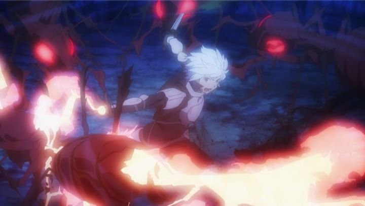

In 2015, an show called "Is It Wrong To Try To Pick Up Girls In A Dungeon?" (shortened to "DanMachi" in online conversations) took the anime community by storm. Was it because of the ridiculously long and cheeky title? Was it because it was following the popular trend at the time, to make stories about characters in a fantasy-video-game-like setting? While these played a part, the biggest reason would be due to a character design trait that made the show popular before the first episode even aired.One of the main characters is a goddess named Hestia. In "DanMachi" 's fantasy world, various Gods take their physical form among humans and gain followers to explore the various dungeons and amass treasure. Hestia resembles something of a Goddess of poverty, only having one one follower, the devoted and well-meaning (if something of a novice adventurer) Bell Cranel. Her outfit consists of a tight white dress that barely covers her, and flip flops when leaving her church ruins she calls a home. In place of a bra to hold her generous bosom, she uses a thin blue ribbon, tied around her upper arms holding up the bottom of her bouncing breasts. A ribbon. Aside from simply being silly sex appeal like so many other anime contain, it became a temporary Internet meme, with hundreds of fanart of other anime characters cosplaying with the ribbon, dozens of fans (both women and men) trying out the ribbon themselves, and in-depth videos of scientists trying to confirm if physics allowed the fashion to be remotely feasible. Aside from the joke, "DanMachi" would retain a good share of fans as it broadcast. That's because it is a surprisingly competent and fun adventure, a good watch even when stacked against dozens of other anime in the same genre. It effectively places itself in the world of a fantasy dungeon-crawling video game, except there is no explicit reference to it being a game and the world's citizens deem it to be as real as their heartbeat. Being an adventurer is a common job, wherein one would travel down a cavernous dungeon of hundreds of floors, the entrance being in a tower at the center of town, and one would fight monsters, level up and collect treasure to buy better weapons and armor, etc. At the start of the show, Bell is an eager but weak adventurer, but quickly gains a special power-up ability that allows him to gain experience more quickly. This is a good excuse for the viewers to watch Bell improve to become one of the better adventurers in the town over the course of thirteen episodes.The story isn't at all complex, but it is effective, in part because of the large cast of characters and detail provided to the world. The cast is varied with different skills and motivations, filling out the expected roles of a video game world. It might sound like Bell's journey to get stronger would be boring, but it's engaging because Bell himself is such an earnest person. When he overcomes a new challenge he wasn't capable of in the first episode, we get that same rush of excitement he does, and the same thrill one would get when defeating a game boss within a few hits of dying. And the show can be surprisingly funny at times, especially at Bell's reactions when in comprimising situations with some of the beautiful women of the show. Overall, it's a good, fun show. It doesn't try to be too ambitious, but the story it wants to tell is tackled just right. The visuals and animation in general are consistently solid, and slightly better than average. The character designs are distinct to each other and recongizable to the show, and are generally attractive. The backgrounds are impressively detailed in the town (and even the generic rockly caves do as much as they can), and use a nice painterly effect to make the world feel more like it came out of a book or written table-top RPG. The animation gets a chance to shine during action scenes, not over-extending themselves, but also using expressive character animation in normal scenes for a bit of extra polish. Some of the larger enemies are CGI, but in the heat of the moment, it isn't as distracting as it could have been, thankfully. The music and English dub are appropriate and memorable to the setting.And does "DanMachi" answer the question "Is It Wrong To Try To Pick Up Girls In A Dungeon?" The title is briefly referenced in the first episode when Bell remembers his grandfather's advice about how being a strong adventurer would be a great way to impress the ladies. At first, Bell's weakness causes him to be saved by girls more than the other way around, but by the end of the season, he has a fair bevy of women pining for his attention. Take that as you will. Anyway, "DanMachi" is a easy show for everyone to enjoy.Side note: aside from the thirteen episodes, Sentai Filmworks released a separate OVA with an English dub on a separate set in the USA in 2018. It's a simple fan-service episode where the characters all enjoy a secret hot-spring together. While not particularly important, it was nice to see this cast again, and hearing the opening theme put a smile on my face.
- "Ani" More reviews can be found at : https://2danicritic.github.io/ Previous review: review_Is_It_Wrong_To_Pick_Up_Girls_In_A_Dungeon_-_Arrow_of_the_Orion Next review: review_It's_Such_a_Beautiful_Day